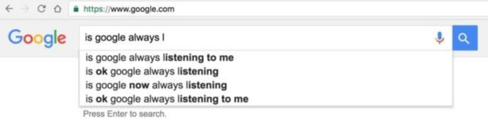

A widely held myth says Google eavesdrops on your life to improve search results. It doesn't, but should it?
Many Google users believe the company records audio through phones and computers, then applies those recordings to the AutoComplete options in Google Search.
I asked followers on Google+ about this and one wrote: "If me and my wife are talking about some random subject like how long turtles live, I'll type 'how' and it will fill in 'long do turtles live' like it was listening. And I'm terrified and impressed."
The anecdotal evidence is convincing. Some say AutoComplete is more than just specifically accurate, it's personal. One commenter said his friend got an address over the phone from his wife. When he started to type that address into Google Maps, the app suggested the exactly correct address after he typed only the first number of the address.
Another flatly proclaimed: "the mic is always on listening mode."
What's going on here?
Google is careful about when, where and how it records user audio. The only way for Google to end up with a recording of your conversations is for you to use one of its voice products, such as the Google app, Google Assistant in the Allo messaging app, Chrome browser, Pixel phone or Google Home appliance. You also have to take deliberate action. You have to press the microphone icon or say either "OK Google" or "Hey Google."
The AutoComplete feature of Google Search is sometimes so accurate that users wonder: Is Google eavesdropping on my conversations?
Google applies voice-recognition software to your words, and uses those words to process your request or command.
Google retains a copy of the recordings to improve its software. The company is trying to be the opposite of sneaky. It provides a detailed history of every recording it has on the user's "My Activity" web page.
Each recording or set of recordings is presented on its own card.
The recordings are listed by date and service (for example, "Assistant," "Google App" or "google.com." On the left you can see the text version of your command, which is a link that, when clicked on, takes you to Google Search results for those words. On the right you'll find a "play" button, so you can listen to each recording. A "more options" menu on the top right of each card enables you to delete any recording.
It's unlikely for a recording to happen by accident. From a phone, for example, the phone must be unlocked and the recording begun by specific user action, such as pressing the icon. On a Pixel phone, the user can set up automatic listing mode by changing the default in settings to enable the "Trusted Voice" setting. That makes the phone listen for the "OK Google" command.
The Google Home product also listens to the "OK Google" command.
So how can the uncanny AutoComplete options reported by some users be explained?
I think the best explanation is that Google is producing AutoComplete options by means beyond the user's understanding. Consider four possibilities.
1. CoincidenceLet's say you do 100 searches using Google Search. Probability would suggest that AutoComplete will be helpful some of the time, useless some of the time and uncannily accurate some of the time. Sometimes a specific thing you're searching for just happens by coincidence to be something lots of other people are searching for, and therefore shows up in AutoComplete. Sometimes you believe you're coming up with a search query out of the blue, but in fact you've been influenced by social trends online.
2. AccidentGoogle claims it doesn't listen to "utterances" -- chatter unrelated to a specific voice search or command. But sometimes it does. On my own "My Activity" page, more than 10 percent of the recordings don't fit Google's criteria for audio that should be recorded and retained. In one case, someone I know who speaks with thickly accented English says something that sounds exactly like "OK Google," but that's not what she said. In others, I don't hear anything remotely similar to "OK Google" on the recording. I just hear a snippet of conversation. Still, a short one- or two-second sentence of otherwise random conversation was recorded in each instance, and the words therein could have been factored into a set of AutoComplete options.
In other cases, it's possible that words spoken in the background or immediately after a legitimate "OK Google" command could be included.
Here's another scenario. Let's say one person has enabled the "Trusted Voice" setting on a Pixel phone. This person is visiting a friend, who's got a Google Home device. The friend says to the Home device: "OK Google, how tall is Taylor Swift?" Two days later, after forgetting the result, the friend with the Pixel goes to do a search, types in "how tall is" and AutoComplete offers "Taylor Swift" in the options. Was Google listening? Yes: The other person's "OK Google" command also triggered and recorded on the Pixel phone without the knowledge of the user.
3. Unexpected sources for signalsIt's clear that with Google Maps, Google includes AutoComplete options based on not only my activity, but my wife's. It's easy, based on activity, for Google to figure out who's intimately connected. For example, it should be clear to Google that my wife and I, who are both heavy Google Maps users, usually travel together to the same GPS coordinates and addresses.
It's also easy to forget that you in fact have previously searched for something. If you don't remember that fact, AutoComplete options can be surprisingly accurate.
4. Artificial intelligenceThe human mind is not generally capable of understanding the cumulative power of personal data to predict outcomes. Google A.I. is capable of connecting many dots behind the scenes to predict results. If you think about it, someone whose search results generally reveal hypochondria and who types the words "where can I" into a search bar during a flu epidemic is likely to search for: "where can I get a flu shot." The user may wonder: "How did they know what I was thinking?"
On that last point: Science fiction writer Arthur C. Clarke said that "any sufficiently advanced technology is indistinguishable from magic." Magician David Blaine does amazing tricks. One explanation is that he has magic powers. A far more likely explanation is that it only looks like magic because his audience doesn't know how he does the tricks.
Likewise, Google Search sometimes -- usually not, but sometimes -- produces uncanny results. One explanation is that Google is recording everything -- usually not, but sometimes - and uses those illicit and illegal recordings to improve AutoComplete. A far more likely explanation is that Google users don't know how Google produces AutoComplete options, and are therefore occasionally surprised.
Google isn't listening all the time. But should it?
With rare and accidental exceptions, Google doesn't record your conversations without your knowledge or permission for the purpose of improving AutoComplete.
The best evidence for this is the fact that AutoComplete isn't always accurate or even helpful.
In other words, the problem with AutoComplete is not that it's "too good" too often, but that it's not good enough often enough.
If Google actually did listen in on your life, AutoComplete would be amazing. No, better still, it would be unnecessary.
If Google listened to, recorded and processed every audible voice and sound within range of your phone, tablet or laptop and applied that data to improving both Google Search AutoComplete and Google Assistant results, you would gain amazing powers of awareness, knowledge and foresight.
Maybe Google actually should record everything.
What if privacy was assured? For example, what if Google verifiably processed audio on the phone and did not retain the recordings, but was able to use every conversation to improve and personalize data. And what if there was an on-off switch, where you could set Google to listen always by default, or only when you threw the switch.
Yahoo heeft vorig jaar software geschreven om alle binnenkomende e-mails van het bedrijf te scannen op bepaalde inhoud, beweren anonieme bronnen van Reuters. Het Amerikaanse bedrijf zou dit gedaan hebben naar aanleiding van een verzoek van de NSA of FBI.
Hoewel Silicon Valley normaal gesproken dit soort verzoeken met hand en tand aanvecht, zou dat in dit geval niet gebeurd zijn, vertellen de bronnen, die bestaan uit drie ex-werknemers en een betrokkene. Het zou de eerste keer zijn dat dit zo makkelijk gaat. Het zou bovendien voor het eerst zijn dat er over de gehele linie gesurveilleerd wordt, in plaats van dat specifieke e-mailaccounts in de gaten gehouden worden. Het is onduidelijk waarnaar gezocht werd en of er data is overhandigd aan de veiligheids- en inlichtingendiensten van de VS.
Yahoo zou de opdracht niet hebben aangevochten omdat het ervan overtuigd was dat het het dispuut niet zou winnen, zeggen de bronnen. Dat sentiment zou komen van eerdere geheime aanvragen die het bedrijf zonder succes aangevochten zou hebben. De beslissing is volgens de bronnen ook de reden waarom Yahoo-securityhoofd Alex Stamos in juni van 2015 van zijn functie afstapte en dezelfde baan aannam bij Facebook, hoewel hij daar zelf niet over repte in zijn aankondiging.
De aanvragen van inlichtingen- en veiligheidsdiensten zouden toenemen vanwege steeds sterker wordende encryptie, wat e-mails onderscheppen bemoeilijkt. Yahoo belooft sinds 2014 op zijn maildienst end-to-end-encryptie toe te passen, wat dit soort praktijken volledig onmogelijk zou moeten maken, zelfs voor Yahoo zelf. End-to-end-encryptie is echter nog steeds niet beschikbaar bij de e-mailprovider. Er wordt nog steeds aan gewerkt.
Yahoo, Stamos, en de NSA weigeren tegenover het Amerikaanse nieuwsmedium inhoudelijk commentaar. Google en Microsoft stellen tegenover Reuters nooit zulke praktijken uitgevoerd te hebben, maar geven geen commentaar als het gaat om de vraag of zij met hetzelfde verzoek benaderd zijn.
Kort geleden bevestigde Yahoo ook nog dat staatshackers van een niet nader genoemd land de gegevens van ongeveer 500 miljoen accounts buitgemaakt hadden.